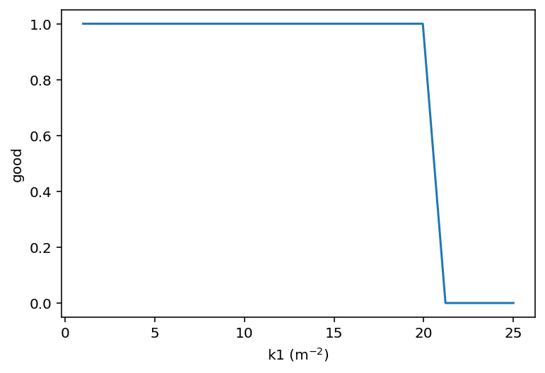
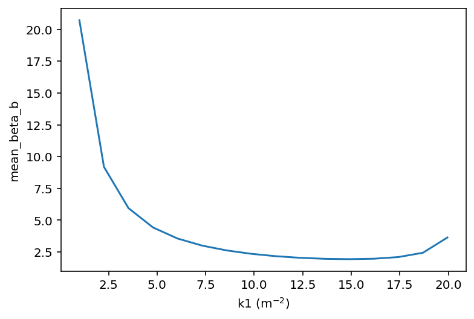
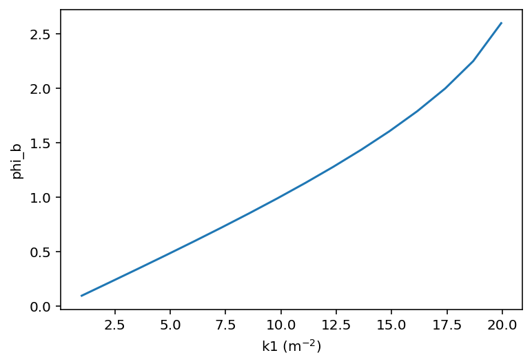
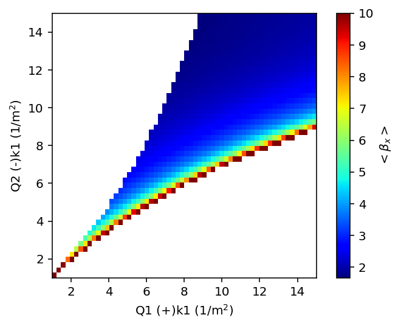
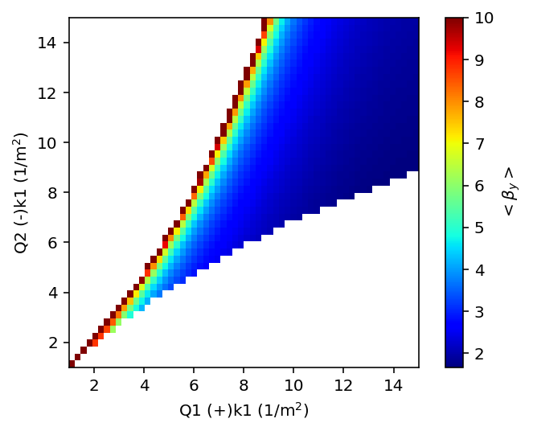
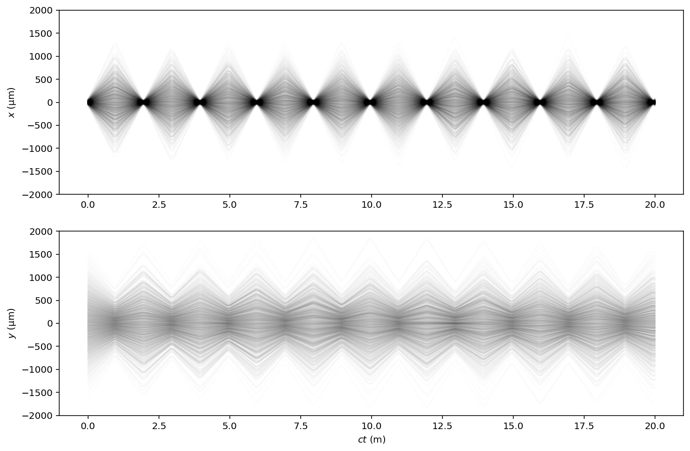
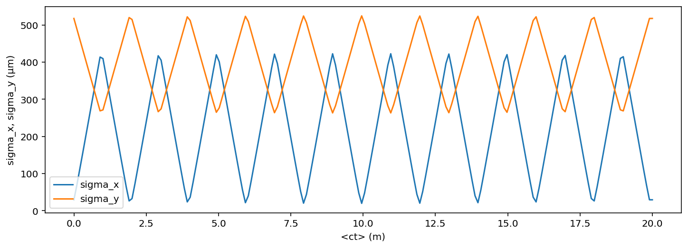

FODO optics
This will demonstrate how to scan symmetrically and asymetrically the quadruople strengths in a standard FODO lattice.
Later we will optimize for particular average beta function.
Finally, we will track a beam and gather statistics from the particles.
[1]:
from pytao import Tao
import numpy as np
import matplotlib.pyplot as plt
import os
%config InlineBackend.figure_format = 'retina'
[2]:
tao = Tao('-init $ACC_ROOT_DIR/tao/examples/fodo/tao.init -lat $ACC_ROOT_DIR/tao/examples/fodo/fodo.bmad -noplot')
[3]:
def add_info(d):
twiss1 = tao.ele_twiss('q1')
twiss2 = tao.ele_twiss('q2')
d['mean_beta_a'] = (twiss1['beta_a'] + twiss2['beta_a'])/2
d['mean_beta_b'] = (twiss1['beta_b'] + twiss2['beta_b'])/2
d['phi_a'] = twiss2['phi_a']
d['phi_b'] = twiss2['phi_b']
return d
[4]:
%%tao
sho lat
-------------------------
Tao> sho lat
# Values shown are for the Exit End of each Element:
# Index name key s l beta phi_a eta orbit beta phi_b eta orbit Track
# a [2pi] x x [mm] b [2pi] y y [mm] State
0 BEGINNING Beginning_Ele 0.000 --- 0.67 0.000 0.00 0.000 3.22 0.000 0.00 0.000 Alive
1 P1 Pipe 0.900 0.900 3.22 0.105 0.00 0.000 0.67 0.105 0.00 0.000 Alive
2 Q1 Quadrupole 1.000 0.100 3.22 0.110 0.00 0.000 0.67 0.129 0.00 0.000 Alive
3 P1 Pipe 1.900 0.900 0.67 0.215 0.00 0.000 3.22 0.235 0.00 0.000 Alive
4 Q2 Quadrupole 2.000 0.100 0.67 0.239 0.00 0.000 3.22 0.239 0.00 0.000 Alive
5 END Marker 2.000 0.000 0.67 0.239 0.00 0.000 3.22 0.239 0.00 0.000 Alive
Lord Elements:
6 O_L Overlay 1.900 --- 0.67 0.215 0.00 --- 3.22 0.235 0.00 --- Not_Set
# Index name key s l beta phi_a eta orbit beta phi_b eta orbit Track
# a [2pi] x x [mm] b [2pi] y y [mm] State
# Values shown are for the Exit End of each Element:
-------------------------
Tao>
Symmetric FODO
[5]:
def set_kx(k1):
cmds = [f'set ele q1 k1 = {k1}',
f'set ele q2 k1 = {-k1}']
d = {}
try:
tao.cmds(cmds)
tao.cmd('set global lattice_calc_on = T')
d['good'] = True
add_info(d)
except:
d['good'] = False
return d
x = set_kx(1.4142136E+01)
KEYS = x.keys()
x
[5]:
{'good': True,
'mean_beta_a': 1.9442223177869156,
'mean_beta_b': 1.9442223177869151,
'phi_a': 1.50388821541239,
'phi_b': 1.5038882154124}
[6]:
# Scan k1
n1 = 20
qvec1 = np.linspace(1, 25, n1)
RESULTS = []
#tao.cmd('set global plot_on = F')
for k in qvec1:
res = set_kx(k)
RESULTS.append(res)
#tao.cmd('set global plot_on = T')
[7]:
# Reshape data
DAT = {}
for key in KEYS:
print(key)
x = []
for res in RESULTS:
if key in res:
x.append(res[key])
else:
x.append(np.nan)
DAT[key] = np.array(x)
good
mean_beta_a
mean_beta_b
phi_a
phi_b
[8]:
DAT.keys()
[8]:
dict_keys(['good', 'mean_beta_a', 'mean_beta_b', 'phi_a', 'phi_b'])
[9]:
for key in KEYS:
plt.plot(qvec1, DAT[key])
plt.ylabel(key)
plt.xlabel(r'k1 (m$^{-2}$)')
plt.show()



Asymmetric FODO
Scan k1 for each quad
[10]:
def set_k(k1, k2):
cmds = [f'set ele q1 k1 = {k1}', f'set ele q2 k1 = {-k2}']
d = {}
try:
tao.cmds(cmds)
tao.cmd('set global lattice_calc_on = T')
d['good'] = True
add_info(d)
except:
d['good'] = False
return d
x = set_k(1.4142136E+01, 1.4142136E+01)
KEYS = x.keys()
x
[10]:
{'good': True,
'mean_beta_a': 1.9442223177869156,
'mean_beta_b': 1.9442223177869151,
'phi_a': 1.50388821541239,
'phi_b': 1.5038882154124}
[11]:
set_k(1,1)
[11]:
{'good': True,
'mean_beta_a': 20.723056201983,
'mean_beta_b': 20.7230562019829,
'phi_a': 0.0966467384116863,
'phi_b': 0.0966467384116869}
[12]:
n1 = 50
n2 = 60
qvec1 = np.linspace(1, 15, n1)
qvec2 = np.linspace(1, 15, n2)
K1, K2 = np.meshgrid(qvec1, qvec2, indexing='ij')
fK1 = K1.flatten()
fK2 = K2.flatten()
[13]:
%%time
# Make data
tao.cmd('set global plot_on = F')
RESULTS = []
for k1, k2 in zip(fK1, fK2):
res = set_k(k1, k2)
# print(res)
RESULTS.append(res)
#tao.cmd('set global plot_on = T')
CPU times: user 3.41 s, sys: 2.02 s, total: 5.43 s
Wall time: 5.51 s
[14]:
# Reshape data
DAT = {}
for key in RESULTS[0]:
print(key)
x = []
for res in RESULTS:
if key in res:
x.append(res[key])
else:
x.append(np.nan)
DAT[key] = np.array(x).reshape(n1, n2)
good
mean_beta_a
mean_beta_b
phi_a
phi_b
Plots
[15]:
NICE = {}
NICE['mean_beta_a'] = r'$<\beta_x>$'
NICE['mean_beta_b'] = r'$<\beta_y>$'
def nice(key):
if key in NICE:
return NICE[key]
return key
[16]:
#fig, ax = plt.subplots(figsize=(10,8))
def plot1(key):
plt.imshow(DAT[key], origin='lower',
extent=[qvec1.min(), qvec1.max(), qvec2.min(), qvec2.max()],
cmap='jet',
vmax = 10)
plt.xlabel('Q1 (+)k1 (1/m$^2$)')
plt.ylabel('Q2 (-)k1 (1/m$^2$)')
plt.colorbar(label=nice(key))
plt.show()
plot1('mean_beta_a')
plot1('mean_beta_b')


Optimize for some special beta functions
[17]:
def optimize(beta_a, beta_b):
cmds = f"""
alias setbetas
veto var *
set lattice model=design
veto dat *
use dat fodo.betas[1,2]
set dat fodo.betas[1]|meas={beta_a}
set dat fodo.betas[2]|meas={beta_b}
use var quad
run
show var -bmad -good
"""
lines = tao.cmds(cmds.split('\n'), suppress_lattice_calc=False, suppress_plotting=False, raises=False)
# Twiss at Q1
T = tao.ele_twiss('Q1')
return T
optimize(10, 20)
[17]:
{'mode_flip': False,
'beta_a': 19.8980601747807,
'alpha_a': 20.8824960367291,
'gamma_a': 21.9658919957419,
'phi_a': 0.688888454799641,
'eta_a': 0.0,
'etap_a': 0.0,
'beta_b': 8.56179989648929,
'alpha_b': -8.68869255014027,
'gamma_b': 8.93426372441017,
'phi_b': 0.0669702646497163,
'eta_b': 0.0,
'etap_b': 0.0,
'eta_x': 0.0,
'etap_x': 0.0,
'eta_y': 0.0,
'etap_y': 0.0}
[18]:
# Check merit
tao.merit()
[18]:
[' 2.80064554015184E-23']
[19]:
# Check that the optimization worked
average_beta_a = tao.data('fodo', 'betas', dat_index=1)['model_value']
average_beta_b = tao.data('fodo', 'betas', dat_index=2)['model_value']
average_beta_a, average_beta_b
[19]:
(9.99999999999998, 20.0000000000017)
[20]:
# These are the K
kq1 = tao.ele_gen_attribs('Q1')['K1']
kq2 = tao.ele_gen_attribs('Q2')['K1']
kq1, kq2
[20]:
(20.6297896339797, -10.5500557883925)
Alternative method: alias
A ‘simple’ Tao alias can be useful when running on the command line.
[21]:
tao.cmd('alias setbetas veto var *;veto dat *;use dat fodo.betas[1,2];set dat fodo.betas[1]|meas=[[1]];set dat fodo.betas[2]|meas=[[2]];use var quad;run;show var -bmad -good')
#tao.cmd('call SetBetas.tao', raises=False)
lines = tao.cmd('setbetas 40 25', raises=False)
lines[-3:];
tao.merit()
[21]:
[' 8.36381886151526E-24']
[22]:
T = tao.ele_twiss('Q1')
T
[22]:
{'mode_flip': False,
'beta_a': 79.7708116314711,
'alpha_a': 83.9897718056194,
'gamma_a': 88.4444024532975,
'phi_a': 0.213283369019615,
'eta_a': 0.0,
'etap_a': 0.0,
'beta_b': 10.6890160749888,
'alpha_b': -10.8776594910373,
'gamma_b': 11.1631861310564,
'phi_b': 0.0536009562200217,
'eta_b': 0.0,
'etap_b': 0.0,
'eta_x': 0.0,
'etap_x': 0.0,
'eta_y': 0.0,
'etap_y': 0.0}
Beam tracking
Here we will make a new lattice with 10 cells that calls the single fodo lattice.
[23]:
from pytao.misc.markers import make_markers
[24]:
?make_markers
Signature: make_markers(slist, filename=None, ref=None)
Docstring:
Makes markers relative to ref ele.
If filename is given, the lines will be written to ta file.
File: ~/Code/GitHub/pytao/pytao/misc/markers.py
Type: function
[25]:
smax = 20.0 # m
# Alternatively, if the lattice were already loaded
#smax = tao.lat_list('*', who='ele.s').max()
slist = np.linspace(0, smax, 200)
make_markers(slist, filename='markers.bmad');
smax
[25]:
20.0
[26]:
# Make a lattice and write to a local file
latfile = os.path.join(os.getcwd(), 'fodo10.bmad')
LAT2 = f"""
call, file = $ACC_ROOT_DIR/tao/examples/fodo/fodo.bmad
call, file = markers.bmad
Q1[k1] = {kq1}
Q2[k1] = {kq2}
lat: line = (10*fodo1)
use, lat
"""
open(latfile, 'w').write(LAT2)
[26]:
172
[27]:
# Run with this lattice
tao = Tao(f'-init $ACC_ROOT_DIR/tao/examples/fodo/tao.init -lat {latfile} -noplot')
[28]:
# Toggle the beam on and off
tao.cmd('set beam_init n_particle = 1000')
tao.cmd('set global track_type = beam;set global track_type = single')
[28]:
['',
'Tao: set global track_type = beam',
'',
'Tao: set global track_type = single']
Get particles
[29]:
import h5py
from pmd_beamphysics import ParticleGroup, particle_paths
with h5py.File('beam_dump.h5', 'r') as h5:
pp = particle_paths(h5)
Plist = [ParticleGroup(h5[g]) for g in pp]
Pretty plot
Traces can be made by gathering the coordinate arrays
[30]:
skip = 1 # make larger for faster plotting
fig, axes = plt.subplots(2, figsize=(12,8))
axes[0].plot(
[P.t[::skip]*299792458 for P in Plist],
[P.x[::skip]*1e6 for P in Plist],
alpha=0.01, color='black'
)
axes[1].plot(
[P.t[::skip]*299792458 for P in Plist],
[P.y[::skip]*1e6 for P in Plist],
alpha=0.01, color='black'
)
axes[0].set_ylabel(r'$x$ (µm)')
axes[1].set_ylabel(r'$y$ (µm)')
axes[1].set_xlabel(r'$ct$ (m)')
for ax in axes:
ax.set_ylim(-2000,2000)

Get some statistics
[31]:
k1 = 'sigma_x'
k2 = 'sigma_y'
x = np.array([P['mean_t']*299792458 for P in Plist])
y1 = np.array([P[k1] for P in Plist])
y2 = np.array([P[k2] for P in Plist])
fig, ax = plt.subplots(figsize=(12,4))
ax.plot(x, y1*1e6, label=k1)
ax.plot(x, y2*1e6, label=k2)
ax.set_xlabel('<ct> (m)')
ax.set_ylabel(f'{k1}, {k2} (µm)')
plt.legend()
[31]:
<matplotlib.legend.Legend at 0x162e6a070>

Cleanup
[32]:
# Cleanup
!rm beam_dump.h5
!rm {latfile}
!rm markers.bmad